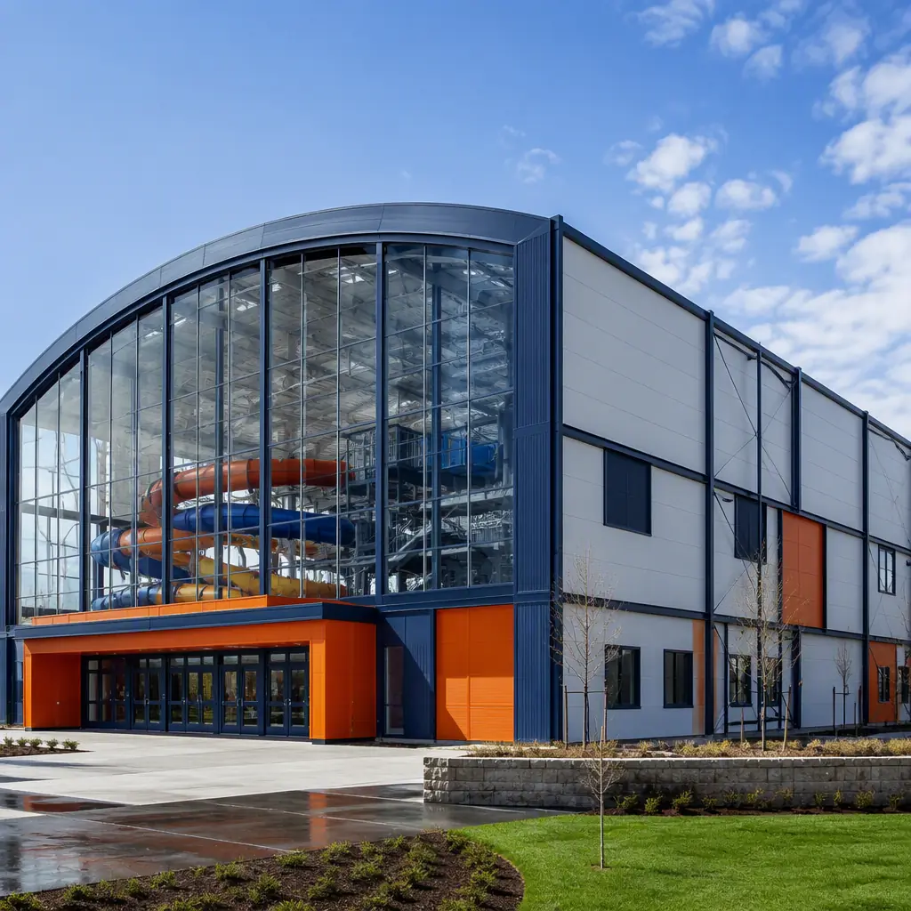
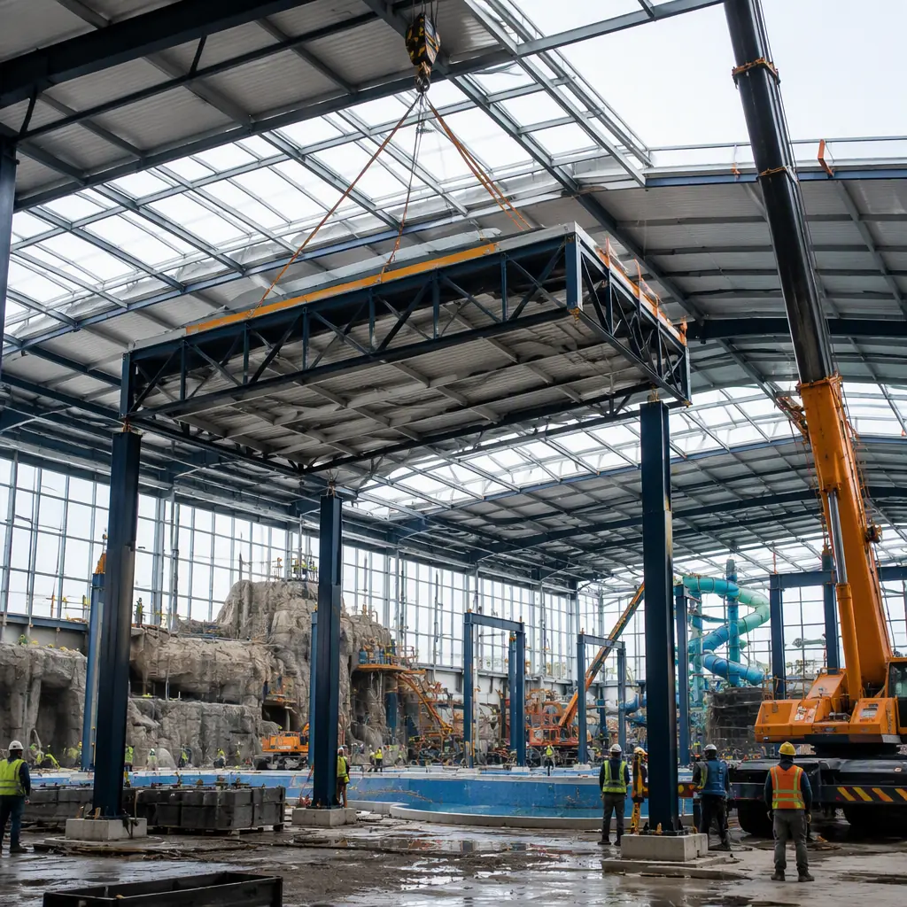
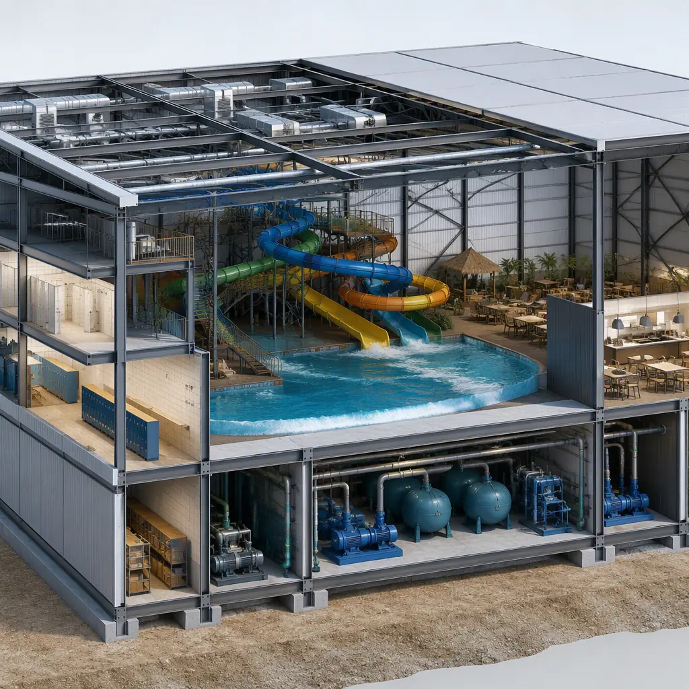
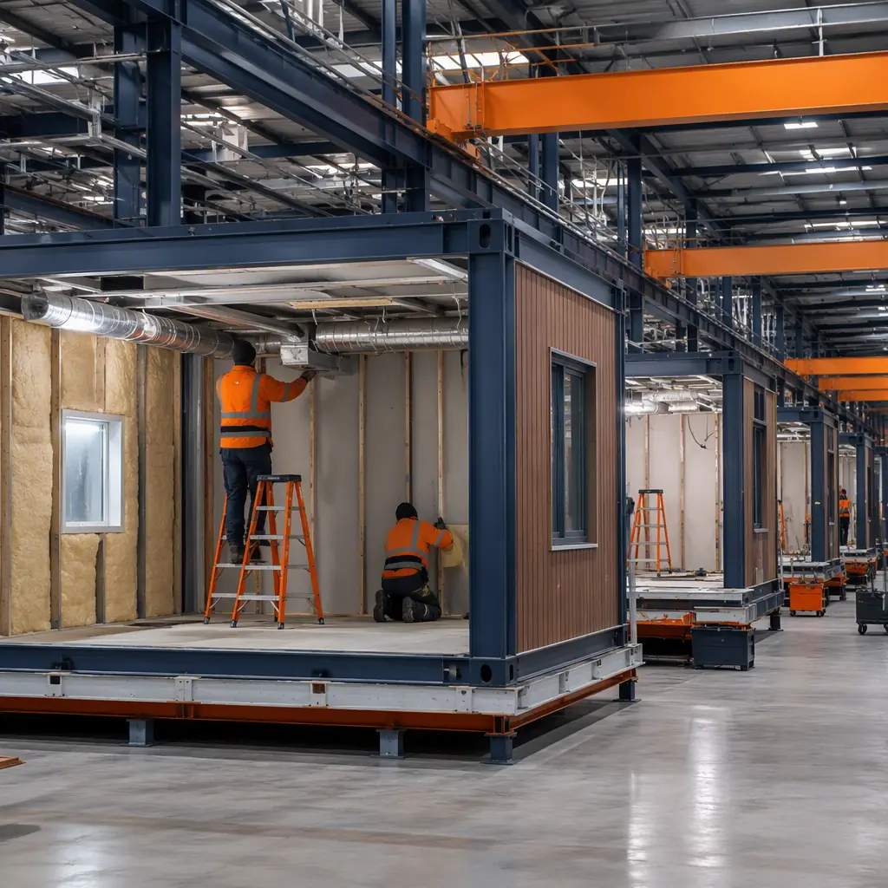

An indoor water park is one of the most mechanically demanding buildings in commercial construction. The pool hall itself must hold a hot, humid atmosphere against the elements while the structure stays condensation-free; the plant room behind it moves thousands of gallons through filtration, heating and chemical systems every hour; and the guest buildings — locker rooms, food courts, retail and guest services — handle daily visitor surges measured in thousands. Every one of those components is a repeatable, code-constrained building with heavy MEP content, which is exactly the building type where factory production delivers the largest schedule and quality advantage. A 40,000 sq ft indoor water park hall, its 8,000 sq ft filtration plant room, and the surrounding locker and guest buildings can be designed, manufactured and delivered in 26–34 weeks — roughly half the schedule of conventional construction — then commissioned in six to ten weeks of pool and systems startup. The same factory-delivery logic we document for modular indoor aquatic and community recreation centers and modular hotel construction applies across the water park program. This guide covers the water park building program, pool hall envelopes, the difference between water parks and community aquatic centers, filtration and plant rooms, the attraction interface, guest buildings, hotel and resort integration, indoor and outdoor phasing, and cost structure.

What a Water Park Actually Builds
Strip away the slides and a water park is a surprisingly small set of building types. The pool hall is the centerpiece: a clear-span enclosure of 30,000–80,000 sq ft housing the attractions, the deck, and the water itself. The plant room is the second-most-critical building: filtration, heating, chemical feed and backwash systems sized for the hall's water volume. Around those two sit the guest program — locker rooms and changing areas, food and beverage courts, retail, first aid and guest services — and the back-of-house program of offices, staff rooms, laundry and maintenance. The pool hall and plant room are the highest-value modular components because they are the most schedule-critical and the most MEP-dense; the guest buildings follow standard commercial modular construction. The campus logic mirrors the venue-building program we document for modular convention and event centers, where a handful of engineered core buildings anchor a program of conventional support buildings.
Pool Hall Envelopes — Clear-Span, Humidity-Controlled
The pool hall envelope is where modular engineering earns its premium. A water park hall must resist constant interior humidity of 60–85% at 82–88°F while the exterior swings through winter and summer — the vapor drive is enormous, and condensation inside walls and roof structures is the classic failure mode that rots conventional buildings from within. Factory-built modules answer with a controlled envelope: vapor barriers, insulated panels and condensation-management detailing assembled in a dry factory rather than in the weather on site. The clear-span structure — up to 120 ft across for wave pool and slide tower layouts — uses the same long-span steel framing we document for modular sports stadiums and arenas. Because the hall is delivered in prefabricated sections, the enclosure goes up in weeks and the interior trades start earlier, compressing the overall schedule that matters most for a seasonal opening date.

Water Parks vs. Community Aquatic Centers — What Changes
The distinction matters for design, cost and code. Community aquatic centers — covered in our indoor aquatic recreation center guide — are built around lap pools, teaching pools and leisure pools for municipal programming. Water parks are built around attractions: slides that demand specific tower heights and structural support, wave pools that require deep mechanical basins and powerful circulation, lazy rivers with their own pump and filtration loops, and zero-depth entry zones that shape the entire deck layout. The practical differences are structural loads from slide towers and wave machinery, water volume that can be three to five times a community pool's per-square-foot, and a mechanical plant sized for continuous peak load rather than programming peaks. The building systems logic — HVAC, dehumidification, filtration — is shared, but the sizing and structural engineering diverge sharply, which is why water park owners should plan with attraction-specific engineering from the start.
Filtration, Mechanical & Plant Rooms
The plant room is the water park's engine room, and it is the building where factory production delivers the most. A typical indoor park circulates its entire water volume every two to four hours through high-rate sand or cartridge filtration, UV and chemical treatment, and heat recovery systems. The plant room houses that equipment with its pumps, valves, chemical storage and backwash handling — a dense, wet, corrosive environment that must be built to exacting standards. Factory-built plant modules arrive with equipment mounted, piped and tested, so the on-site work shrinks to interconnecting the hall loop and the utility feeds. The same modular plant-room discipline is documented in modular MEP systems integration, and the energy recovery — reclaiming heat from pool water and exhaust air to cut operating cost — follows the efficiency framework in modular energy efficiency buildings.

The Attraction Interface — Slides, Wave Pools & Ride Support
Water park buildings must interface with the attractions themselves. Slide towers need structural steel anchored through the hall structure, with platform supports sized for dynamic loads and access platforms integrated with the building. Wave pools require deep mechanical basins beneath the deck, housing wave generators and return systems that tie directly into the plant room. Lazy rivers loop through the hall with their own pump stations and filtration loops. The modular approach handles this interface by engineering the building and the attraction supports together in the factory: slide tower steel, pump basins and pipe chases are built into the modules rather than improvised on site. The integration discipline — coordinating structural, mechanical and attraction systems on one model — follows the same digital workflow we document in modular BIM and digital workflow.
Locker Rooms, Food & Guest Services
The guest program around the hall is conventional commercial construction with water park specifics. Locker rooms and changing areas are high-occupancy, high-moisture buildings with vandal-resistant fixtures — the same wet-room engineering we document for prefabricated bathroom pods, scaled up for swimwear traffic. Food courts serve thousands of guests a day and are built as factory-fitted kitchens with grease ducts, fire suppression and serving lines installed and tested — the approach covered in modular restaurant construction. Retail, first aid, family changing rooms and guest services follow the standards in modular retail construction. Because these buildings can be manufactured while the hall is being set, they arrive on a schedule that lets the park open everything at once rather than phasing guest services in months later.
Hotel & Resort Integration
The fastest-growing water park segment is the hotel-attached indoor park, where the attraction is the anchor amenity that drives occupancy. The integration pattern is proven: a resort builds its guest towers — the program covered in our modular hotel guide — while the water park hall and plant room are manufactured in parallel, then both are installed against a single opening date. The park's plant room and the hotel's mechanical systems can share utility corridors and energy-recovery infrastructure, and the guest flow between hotel lobby and park entrance is designed as one experience. For multi-property operators rolling out the same park-plus-hotel format across destinations, the repeatable building program follows the franchise-rollout economics we document in modular franchise and chain rollout construction.
Indoor vs. Outdoor — Phasing & Seasonality
Indoor parks run year-round and must hit a fixed opening date; outdoor parks open seasonally and must be ready for the first summer weekend. Both schedules are brutal for conventional construction, which is why modular delivery fits: the building work happens in the factory through the winter, and installation lands in the spring. The critical-path discipline for factory slots, module sequencing and site preparation — pool shell, utility feeds and crane planning completed before modules arrive — is exactly the scheduling methodology we document in modular construction scheduling. Logistics planning covers crane placement for hall roof sections and route permits for oversized module transport; the crane and transport engineering follows our modular crane logistics guide and modular transportation logistics guide. Fire suppression and life safety in high-occupancy pool halls and kitchens follow the full compliance framework in our modular construction fire safety guide.
Commissioning & Pool Startup
The final phase of any water park project is the startup sequence, and it is longer and more technical than most owners expect: the pool shells are hydrostatically tested, filtration loops are flushed and balanced, chemical feed systems are calibrated, and the HVAC and dehumidification plant is commissioned against the hall's peak humidity load. In conventional construction this sequence often runs six to ten weeks of on-site work, during which every deficiency found is fixed with the building trades still on site. With factory-built plant rooms and hall modules, the mechanical systems arrive pre-tested, so the startup sequence concentrates on the site-specific interconnections — the pool shell to the plant loop, the utility feeds, and the integrated controls. The same factory-commissioning discipline we document for modular factory QC systems means the park's opening-day operation starts from a baseline that was verified in the factory, not discovered on site. The permit and inspection sequence that wraps the startup is covered in our modular construction permitting guide.
Cost Structure — Modular vs. Conventional Water Park Buildings
| Water Park Building Program | Conventional | Modular |
|---|---|---|
| Pool hall envelope (40,000 sq ft clear-span) | $12–18M / 14–18 months | $9.6–14.4M / 26–34 weeks |
| Filtration & mechanical plant room (8,000 sq ft) | $2.4–3.6M / 10–14 months | $1.9–2.9M / 18–24 weeks |
| Locker rooms & guest services (10,000 sq ft) | $2.2–3.3M / 9–12 months | $1.8–2.6M / 14–18 weeks |
| Food court with kitchen (6,000 sq ft) | $2.4–3.6M / 10–13 months | $1.9–2.9M / 16–20 weeks |
The 15–20% capital saving is real, but the decisive number for water parks is the opening date: a hall delivered in one construction season opens for the next summer's revenue, not the season after. For the full cost methodology, see our 2026 modular construction cost guide.

Is Modular Right for Your Water Park?
Modular delivery creates the strongest value for resorts adding an indoor park as an anchor amenity, operators building to a fixed seasonal opening date, municipal projects with hard funding deadlines, and multi-property brands repeating the same park format across destinations. For parks that need flexible capacity — seasonal annex halls, event space or temporary guest buildings — the same modules can be deployed, relocated and stored between seasons, following the approach in modular temporary and relocatable facilities. The customized envelope and theming options are covered in our modular building design flexibility guide.
Planning a water park or aquatic attraction? Request our aquatic-venue documentation package — pool hall and plant room module specifications, filtration system layouts and opening-date installation schedules. Contact the MODURA engineering team.